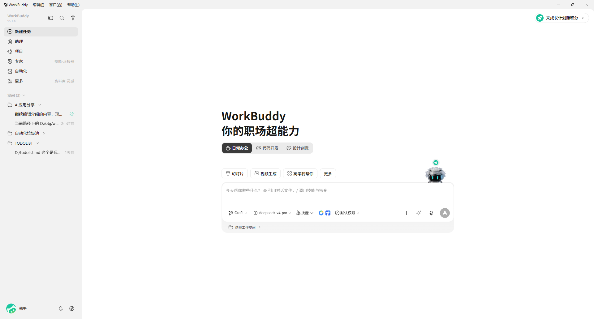
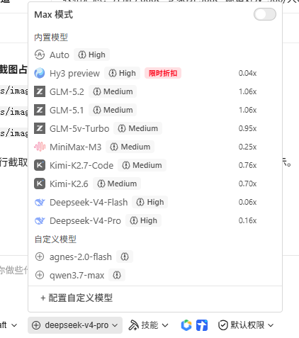
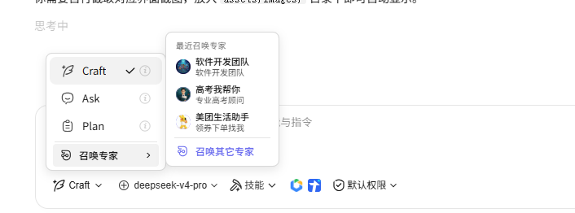

从零开始认识 WorkBuddy，覆盖下载安装、账号配置、核心功能、计费模式、模型选择、进阶技巧，帮你快速上手这款 AI 桌面智能体工具。
一、WorkBuddy 是什么
WorkBuddy 是腾讯推出的 AI 原生桌面智能体工作台。与传统的 AI 聊天工具不同，你只需用自然语言描述需求，它会自动思考、拆解任务、规划步骤并执行，最终交付可验证的成果。简而言之：它不是陪你聊天，而是帮你干活。
账号体系：WorkBuddy 使用微信扫码登录，直接绑定你的微信号，无需额外注册账号、无需手机号验证。一个微信账号即是一个 WorkBuddy 账号，登录即用。
计费方式：WorkBuddy 采用积分（Credits）制——每次使用 AI 能力会消耗一定积分，不同任务消耗的积分不同（例如简单问答消耗较少，长文档处理消耗较多）。你可以免费开始使用，积分不够时再考虑付费订阅。
免费积分获取：
| 获取方式 | 积分数量 | 说明 |
|---|---|---|
| 首次注册 | 2,000 Credits | 注册即送，一次性发放 |
| 每日登录 | 150 Credits | 每天登录自动领取 |
以上免费积分加起来，初期上手完全够用。假设你每天用 WorkBuddy 处理 2-3 个日常任务（如整理文档、分析数据、生成报告），首月累计可获得 2,000 + 150 × 30 = 6,500 Credits，基本不需要额外付费。等你真正上手了、用量上来了，再根据实际需求选择付费方案。
二、从哪里下载
官方下载地址：
网站会自动识别你的操作系统（Windows / macOS），点击对应版本下载即可。
系统要求：
| 操作系统 | 版本要求 |
|---|---|
| Windows | Windows 10 / 11 |
| macOS | macOS 12 及以上 |
安装步骤
Windows 安装（重要）
安装包约 150-180MB，双击运行后按提示操作即可。需要注意以下几点：
- 不要安装到 C 盘：安装过程中会提示选择安装路径，务必手动修改到其他盘（如 D 盘）。WorkBuddy 在工作过程中会下载模型文件、缓存数据，这些文件会持续增长，C 盘空间不足会导致运行异常。
- 安装完成后，桌面会自动生成 WorkBuddy 快捷方式。
macOS 安装
下载 .dmg 文件后，拖拽到 Applications 文件夹即可，无特殊注意事项。
初始化登录与配置
安装完成后首次启动，需要进行以下几步初始配置：
第一步：微信扫码登录
WorkBuddy 使用微信扫码登录，无需额外注册账号。打开软件后，点击"微信登录"，用手机微信扫描屏幕上的二维码即可完成登录。一个微信账号即绑定一个 WorkBuddy 账号。
第二步：微信小程序绑定（重要）
登录后，建议立即绑定微信小程序。绑定后你可以通过手机上的「WorkBuddy 小程序」远程给电脑端的 WorkBuddy 发送指令——比如你在外面开会，可以用手机让 WorkBuddy 帮你生成一份报表，回到家时已经准备好了。
绑定方式：在 WorkBuddy 桌面端设置中找到「微信小程序」入口，用微信扫码即可完成关联。
第三步：配置默认工作空间
WorkBuddy 需要指定一个默认工作空间（即它读写的根目录），建议配置为你日常工作的文件夹，例如 D:\Work\。这样你让 AI 处理文件时，默认就在这个目录下操作，省去每次指定路径的麻烦。
提示：工作空间不要选在 C 盘，原因同上——避免空间不足影响使用。
三、实际能干什么
以下从零基础用户的视角，用四个最常见的场景展示 WorkBuddy 的实际用法。每个场景都包含"怎么做"和"得到什么效果"。
3.1 日常问答：不懂就问，当你的随身百科
WorkBuddy 本质是一个对话工具，你像跟同事聊天一样对它说话就行。不需要任何技术术语，也不用学什么"提示词技巧"——用大白话描述你的问题，它就能给出答案。
举个例子：
操作：在输入框里直接打一句话——
效果：WorkBuddy 会先告诉你几种转换方法（比如用 WPS、在线工具、或者直接让它帮你转），然后你可以直接把 PDF 文件拖进去，说"那你帮我转一下"。几秒钟后，Word 文件就生成好了。
3.2 文档处理：让它帮你写、帮你改、帮你整理
日常工作中最耗时的往往不是"做事"，而是"写东西"——周报、会议纪要、汇报材料、通知公告。这些都可以交给 WorkBuddy。
举个例子：
操作：把原始文稿拖进 WorkBuddy，输入——
效果：WorkBuddy 会自动梳理出结构化的纪要——去掉口水话、提取关键信息、按逻辑分段、标注责任人。你只需要通读一遍，微调几个字，就可以直接发出去了。
3.3 代码编写：不懂代码也能处理数据
这是最容易被误解的一项能力。很多人以为"代码编写"是程序员才用的功能，但实际上，你不需要懂代码，只需要说清楚"我想对这批文件做什么"，WorkBuddy 会自动编写并运行脚本。
举个例子：
IMG_0001.jpg、IMG_0002.jpg 这种格式。你想把它们改成 2025年春季书展_01.jpg、2025年春季书展_02.jpg 这样的格式，但手动改太慢。操作：把文件夹路径告诉 WorkBuddy——
效果：WorkBuddy 会自动生成一段重命名脚本，在后台运行，几秒钟后 200 张照片全部改名完成。你全程不需要写一行代码，甚至不需要知道脚本长什么样。
3.4 任务自动化：重复的事情让它定时做
如果你的工作中有固定的周期性任务——比如每周五生成销售周报、每天整理邮箱附件、每月初汇总考勤数据——这些都可以配置为自动化任务，WorkBuddy 按预设时间自动执行。
举个例子：
操作：跟 WorkBuddy 说清楚需求——
效果：首次配置完成后，WorkBuddy 会每天下午 5 点自动读取 Excel 数据、汇总计算、生成日报文件。你到点打开文件就能用，再也不用每天手动拉数据、做透视表。如果哪天数据有变动，日报也会自动反映最新结果。
四、是否收费
WorkBuddy 采用"免费体验 + 付费订阅"的计费模式，具体如下：
4.1 个人版（2026 年 7 月 1 日起生效）
| 版本 | 月付价格 | 连续包月（7 折） | 每月积分 | 核心权益 |
|---|---|---|---|---|
| 体验版 | 免费 | — | 500 Credits | 基础功能，有对话频率限制 |
| 标准版 | 99 元 | 70 元/月 | 4,000 Credits | 无限次代码补全、全模型可用、15 个自动任务/月 |
| 高级版 | 199 元 | 140 元/月 | 9,000 Credits | 30 个自动任务/月 |
| 旗舰版 | 999 元 | 700 元/月 | 50,000 Credits | 99 个自动任务/月 |
4.2 新用户福利与积分获取
每日签到（必做）
WorkBuddy 提供每日签到领积分功能，是获取免费积分最稳定的渠道。
签到位置：打开 WorkBuddy 客户端 → 点击左下角头像 → 在弹出菜单中点击「领取今日礼包」即可完成签到。
也可以在首页直接点击签到按钮（通常在左下角头像区域有醒目的签到入口）。
签到规则：
| 签到天数 | 奖励积分 | 说明 |
|---|---|---|
| 每天签到 | 150 Credits/天 | 每天签到即可领取，积分固定 |
| 每月累计 | 约 4,500 Credits/月 | 纯签到月入 4,500+，日常完全够用 |
查看积分余额：左下角头像 → 「积分余额」→「用量管理」，可以查看当前积分余额、消耗明细和历史记录。
其他免费积分渠道
| 渠道 | 积分 | 操作方式 |
|---|---|---|
| 首次注册 | 2,000 Credits | 注册即送，一次性发放 |
| 每日签到 | 150 Credits/天 | 左下角头像 → 领取今日礼包 |
| 体验专家团 | 500 Credits | 进入「成长计划」→ 完成「体验专家团」任务 |
| 邀请好友 | 500 Credits/人 | 邀请同事注册，双方各得 500 |
| 社区发帖 | 500-1,000 Credits/篇 | 在官方社区分享使用心得或教程 |
| 节日福利 | 不定 | 节假日关注官方公告，限时积分礼包 |
提示：积分有效期约 30 天，签到要及时，过期清零。WorkBuddy 与 CodeBuddy（AI 编程工具）共享积分，无需重复付费。
4.3 不同模型，不同消耗
WorkBuddy 在执行任务时可以选择不同的 AI 模型，不同模型的计费方式不同——能力越强的模型，消耗的积分越多。合理选择模型是省钱的关键。
| 模型类型 | 消耗积分 | 适用场景 |
|---|---|---|
| 轻量模型（如 Lite） | 低 | 日常问答、简单总结、格式转换 |
| 标准模型（如 Default） | 中 | 文档撰写、数据分析、代码生成 |
| 深度推理模型（如 Reasoning） | 高 | 复杂逻辑推理、长文档深度分析、多步骤规划 |
省积分技巧：
- 问一个简单问题（如"PDF 怎么转 Word"）时，切换到轻量模型，消耗极少；
- 需要写一份正式报告时，再用标准模型；
- 只有遇到真正的复杂任务（比如分析几十页合同条款），才需要动用深度推理模型。
切换方式：在输入框上方或设置中，找到模型选择器，点击即可切换。积分不够用时，优先考虑换模型，而不是直接充值。
4.4 如何获取更多免费积分
除了每日登录的 150 Credits，还可以通过以下方式获取额外积分：
- 官方活动：WorkBuddy 不定期推出积分活动，关注软件内的活动公告或官方公众号，参与即可获得加赠积分；
- 邀请好友：邀请同事注册 WorkBuddy，双方均可获得积分奖励；
- 社区贡献：在官方社区分享使用技巧、提交反馈，优质内容有机会获得积分奖励；
- 节日福利：节假日期间官方通常会发放限时积分礼包，留意通知即可。
4.5 接入外部大模型（Token Plan）
如果你有自己购买的其他大模型 API 额度——比如 DeepSeek、通义千问（Qwen）、方舟（Ark） 等——可以直接配置到 WorkBuddy 中使用，不再消耗 WorkBuddy 内部积分。
配置步骤：
- 在对应平台（如 DeepSeek 开放平台、阿里云百炼、火山方舟）购买 API 额度，获取 API Key；
- 打开 WorkBuddy，进入「设置」→「模型服务」→「添加自定义模型」；
- 选择模型提供商（如 DeepSeek / 千问 / 方舟），填入 API Key 和接口地址；
- 保存后，在模型选择器中即可切换到你配置的外部模型。
这样配置后，使用外部模型的任务消耗的是你自己购买的 API 额度，不占用 WorkBuddy 积分。对于重度用户来说，自行购买 API 额度往往比直接订阅高级版更划算——比如 DeepSeek 的 API 价格极低，几块钱就能处理大量文档。
4.6 建议
- 轻度用户：体验版足够，首月免费积分可达 6,500 Credits（2,000 注册 + 150×30 每日），可支撑日常办公需求
- 日常办公用户：标准版（连续包月 70 元/月）性价比最高，解除限制后基本够用
- 重度用户：可考虑接入外部模型（如 DeepSeek API），成本远低于订阅旗舰版
- 积分不够时：优先切换轻量模型 → 参与活动获取免费积分 → 最后才考虑充值
五、快速上手
第一步：界面认知
打开 WorkBuddy 后，你会看到四个主要区域：

- 输入框：在底部，用于输入你的需求或问题
- 对话区：中间区域，显示你与 AI 的交互记录
- 左侧边栏：提供专家、技能、连接器等扩展功能入口
- 右侧边栏：文件产物区——这是 WorkBuddy 与普通对话型 AI 最大的区别
右侧边栏：直接找到 AI 生成的产物
普通 AI 对话工具，你问一句它答一句，生成的代码、文档、表格都嵌在对话里，你需要手动复制出来保存。而 WorkBuddy 不一样——它直接在本地文件系统里干活，所有生成的文件（Word、Excel、PPT、代码、图片等）都会出现在右侧边栏的「文件」列表中。
这意味着什么：
- AI 帮你写了一份报告 → 右侧边栏直接出现一个
.docx文件，点击就能打开，已经在你的电脑里了； - AI 帮你分析完数据 → 生成的 Excel 图表文件就在右侧边栏，双击用 Excel 打开即可；
- AI 帮你写了一个脚本 → 右侧边栏出现
.py或.js文件，直接运行或分享。
你不需要"复制粘贴"、"另存为"、"导出下载"——AI 干完活，产物就在你电脑上，跟你自己手动创建的文件没有任何区别。这是 WorkBuddy 作为桌面智能体与网页版聊天 AI 最本质的不同。
输入框详解：模型选择
输入框左侧有一个模型选择器，点击下拉可以看到 WorkBuddy 内置的所有模型。

每个模型名称旁边会显示以下关键信息：
| 看什么 | 在哪看 | 含义 |
|---|---|---|
| 积分消耗 | 模型名后面的数字（如 0.16x） | 倍率越高，处理同样任务消耗的积分越多 |
| 能力提示 | 鼠标悬停模型名时弹出的简介 | 告诉你这个模型擅长什么 |
| 是否支持图片 | 模型名旁是否有相机图标 | 有图标 = 可以上传图片让它分析 |
| 是否支持推理 | 模型名旁是否有大脑图标 | 有图标 = 支持深度思考模式 |
内置模型速览：
| 模型 | 推荐场景 | 支持图片 | 特点 |
|---|---|---|---|
| Auto（自动） | 懒得选的时候用 | 是 | 系统自动判断任务难度，帮你选最合适的模型 |
| DeepSeek-V4 | 日常问答、代码、数据分析 | 是 | 综合能力强，性价比高 |
| Kimi-K2.6 | 长文档、多文档综合分析、图片理解 | 是 | 超长上下文（200 万 Token），一次能读整本书 |
| GLM-5.2 | 中文写作、知识问答 | 是 | 中文语义理解突出 |
| GLM-5v-Turbo | 图片分析、图表解读 | 是 | 原生多模态，看图能力最强 |
| Hy3 preview | 复杂推理、深度分析 | 是 | 混元思考模型，推理能力增强 |
| MiniMax-M2.5 | 创意写作、内容生成 | 是 | 文本风格多样，适合营销文案 |
场景化推荐：
- 日常问答、简单任务（如"PDF 怎么转 Word"）→ 选 DeepSeek-V4，消耗低、响应快；
- 带图片的任务（如"分析这张数据图表"）→ 选 Kimi-K2.6 或 GLM-5v-Turbo，原生多模态，看图理解最准；
- 长文档处理（如"读完这份 50 页合同并总结要点"）→ 选 Kimi-K2.6，200 万 Token 上下文，一次塞一整本书没问题；
- 复杂分析、深度推理（如"帮我分析这三份财报的关联性"）→ 选 Hy3 preview 或 DeepSeek-V4，推理能力强；
- 拿不准选什么 → 直接用 Auto，让系统帮你决定。
新手建议：平时用 Auto 模式，等熟悉各模型特点后再根据任务类型手动切换，既省心又省积分。
输入框详解：工作模式（Craft / Plan / Ask）
输入框上方有三个模式切换按钮，决定了 WorkBuddy 的"干活方式"：

| 模式 | 中文含义 | 适用场景 |
|---|---|---|
| Craft | 你说，我做 | 日常使用最频繁的模式。你提需求，AI 直接动手执行，不废话 |
| Plan | 先计划，后执行 | 复杂任务先用 Plan 模式让 AI 出方案，你确认后再执行 |
| Ask | 只聊，不动手 | 纯咨询场景，AI 只回答问题，不会修改任何文件 |
怎么选：
- 明确知道自己要什么（比如"帮我把这份 PDF 转成 Word"）→ Craft，直接干活；
- 任务比较复杂、怕 AI 跑偏（比如"帮我设计一个数据看板"）→ Plan，先看方案再动手；
- 只是问个问题、了解一下功能（比如"这个功能怎么用"）→ Ask，安全省积分。
新手建议：日常用 Craft，不确定时切到 Plan 让 AI 先说说打算怎么做，满意了再切回 Craft 执行。
输入框详解：工作空间选择
每次启动新任务时，WorkBuddy 会提示你选择工作空间——也就是 AI 读写文件的根目录。你之前在初始化配置中设置过默认工作空间，但具体到每个任务，可以灵活调整。
工作空间的影响：
- AI 默认在这个目录下查找和生成文件，比如你让它"读取销售数据"，它会优先在工作空间里找；
- 如果选错了工作空间，AI 可能找不到你要的文件，导致任务失败；
- 反过来，如果你想限制 AI 的访问范围，可以把工作空间设为一个子文件夹，这样 AI 不会看到其他目录的文件。
建议：每次开始新任务前，花 2 秒确认一下工作空间是否正确。大多数时候用默认工作空间即可，处理特定项目时再切换。
第二步：进阶技巧
召唤专家团（Experts）
WorkBuddy 内置了 100+ 位领域专家，每位专家针对特定场景调优过——比如有专门写 PPT 的专家、有擅长数据分析的专家、有精通法律文书的专家。你可以随时召唤专家来帮你处理专业任务。
怎么用：在左侧侧边栏点击「专家」，浏览或搜索你需要的专家，点击即可召唤到当前对话中。专家会以该领域的专业视角辅助你完成任务。
举个例子：你要做一份年终汇报 PPT，与其自己从零开始写提示词，不如直接召唤「PPT 制作」专家，把素材和需求丢给它，它生成的 PPT 质量远高于通用模型。
技能选择（Skill）
技能（Skill）是 WorkBuddy 的"能力插件"——你可以理解为给 AI 安装各种专业工具包。WorkBuddy 支持三种来源的技能：
| 来源 | 说明 | 适用场景 |
|---|---|---|
| 内置技能 | WorkBuddy 自带的基础技能，如文件处理、代码生成等 | 开箱即用，无需配置 |
| 外部技能 | 从官方技能市场下载安装，覆盖金融、法律、设计等垂直领域 | 需要特定专业能力时安装 |
| 自建技能 | 你自己编写 SKILL.md 文件定制的专属技能 | 沉淀团队经验、封装常用操作流程 |
外部技能示例：安装「金融数据查询」技能后，WorkBuddy 可以直接查询股票行情、基金净值、财报数据，无需手动搜索。
自建技能示例：你们团队每月有固定的周报格式和模板，你可以写一个「周报生成」技能，定义好格式要求和数据来源，以后每次只需说"生成本周周报"，AI 就按你预设的模板自动完成。
连接常用连接器（Connectors）
连接器让 WorkBuddy 能够直接与外部服务打通——不是简单的"打开网页"，而是真正的数据互通，AI 可以直接在你的工具里读写数据。以下是三个最常用的连接器：
1. 腾讯会议
连接后，WorkBuddy 可以读取你的会议录制列表，直接导入会议转写文本，并自动生成会议纪要。
场景举例：你昨天开了 3 个会，今天需要整理会议纪要。在 WorkBuddy 里说"帮我导入昨天的产品评审会录制，生成会议纪要"，AI 会自动拉取录制、提取转写文本、整理成结构化纪要，省去手动听录音的 2 小时。
2. 腾讯文档
连接后，WorkBuddy 可以直接在腾讯文档中创建、编辑、搜索文档，无需手动复制粘贴。
场景举例：你让 WorkBuddy 帮你写了一份项目方案，完成后说"把这份方案保存到腾讯文档，放到'2025 年项目'文件夹里"，文档就自动创建好了，你打开腾讯文档就能看到。
3. QQ 邮箱
连接后，WorkBuddy 可以读取你的邮件、帮你整理邮件摘要、甚至代你发送邮件。
场景举例：周一早上你打开 WorkBuddy，说"帮我整理一下周末收到的未读邮件，按重要性排序，重要的帮我标出来"，AI 会读取你的收件箱，生成一份邮件摘要，让你 5 分钟处理完原本需要 30 分钟的工作。
连接器配置方式：在左侧侧边栏点击「连接器」，选择对应的服务，按提示完成授权即可。每个连接器只需配置一次，之后永久生效。
六、实用示例
示例 1：快速生成会议纪要
用户：请将这份录音转文字稿整理成标准会议纪要格式
[上传录音转写文本]
AI：好的，我来帮您整理...
[生成结构化的会议纪要]示例 2：批量重命名文件
用户：请帮我把这些文件按日期格式重命名
[上传多个文件]
AI：已为您生成重命名脚本，请查看...七、常见问题
Q: 上传的文件大小有限制吗？
A: 一般情况下，单个文件建议不超过 50MB，具体取决于当前使用的模型和配置。
Q: AI 生成的内容可以直接使用吗？
A: 建议先审核再使用，特别是涉及重要决策或对外发布的场景。
Q: 如何保护数据隐私？
A: 避免上传包含敏感个人信息（如身份证号、银行卡号）的文件，企业数据请遵循公司安全规范。
本教程持续更新中，如有建议欢迎反馈。